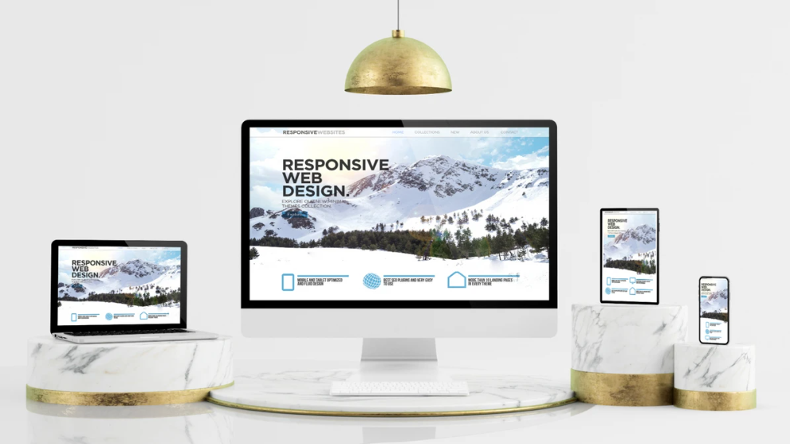

The Rise of Web 2.0
Web 2.0 describes the shift from primarily static websites to interactive platforms where users can create, share, and discuss content. This transformation became especially noticeable during the early 2000s.
Social media, blogs, video-sharing platforms, and collaborative websites became important parts of the internet. Users were no longer limited to reading information; they could also contribute and communicate with others.
Examples of Web 2.0
- Social networking websites
- Video-sharing platforms
- Blogs and discussion forums
- Collaborative websites
- Online reviews and comments
Technologies Behind Modern Websites
JavaScript
JavaScript allows websites to respond to user actions, update content, and provide interactive experiences without requiring a full page reload.
CSS
Cascading Style Sheets control the appearance and layout of websites, including colors, fonts, spacing, and responsive designs.
Cloud Computing
Cloud computing provides online infrastructure and services that support modern websites and applications at different scales.
Mobile Web Development
Modern websites are increasingly designed to work across smartphones, tablets, laptops, and desktop computers.
What Is Web 3.0?
Web 3.0 is a term used for several emerging ideas about the future of the web. One common interpretation emphasizes decentralization, blockchain technology, and greater user control over digital assets.
The term is also sometimes associated with intelligent and semantic web technologies. These interpretations are not identical, and Web 3.0 remains an evolving concept.
Common Web 3.0 Ideas
- Decentralized applications
- Blockchain-based services
- Digital ownership
- Greater data portability
- Semantic and intelligent systems
Comparing Web 1.0, 2.0, and 3.0
The following table summarizes important differences between these stages and concepts.
| Feature | Web 1.0 | Web 2.0 | Web 3.0 |
|---|---|---|---|
| Main Focus | Reading content | Interaction and sharing | Decentralization and ownership |
| User Role | Reader | Creator and participant | Participant and potential owner |
| Typical Technology | HTML and HTTP | JavaScript and web APIs | Blockchain and decentralized apps |
| Typical Content | Static information | User-generated content | Decentralized services |
The Future of Web Development
Web development continues to evolve through artificial intelligence, improved accessibility, faster network connections, and new approaches to privacy and security.
Developers must balance innovation with usability, performance, and the protection of user data.
